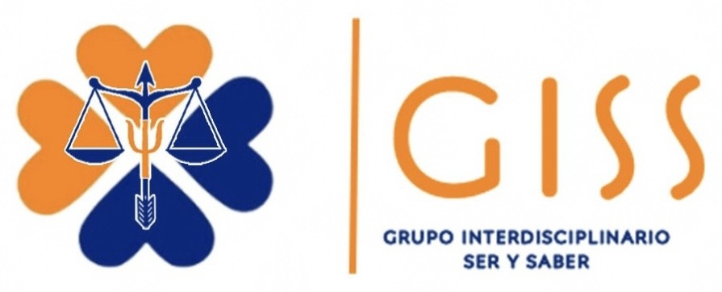
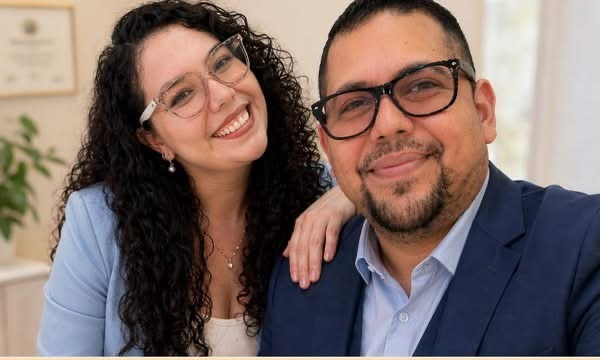

Psic. Renée Miranda Jiménez Gaxiola
Psicología clínica · Cédula profesional 14581274 · Neuropsicología infantil, crianza y adolescencia.
WhatsApp
Psicología · Desarrollo humano · Soluciones empresariales

Atención profesional desde la psicología, la educación y el derecho.
Conocer nuestros servicios →Psicología clínica · Cédula profesional 14581274 · Neuropsicología infantil, crianza y adolescencia.
WhatsAppAbogado, psicólogo y educador · Derecho familiar, orientación legal y mediación.
WhatsAppCol. 20 de Noviembre, Tijuana, B.C. · Dirección exacta al agendar
Lunes a viernes: 9:00 a.m. – 6:00 p.m.
Sábados: 2:00 p.m. – 5:00 p.m.
Atención presencial y en línea · Español e inglés
Facturación disponible